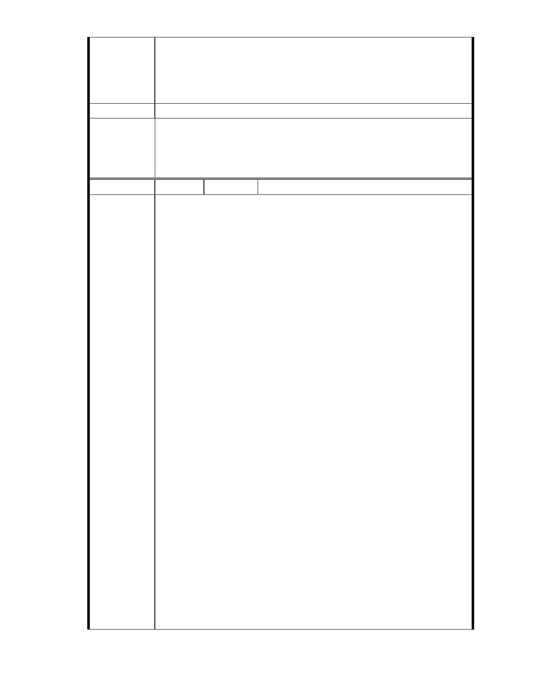

建議辦法
市府說明
七、本人居住於大湖里成功 5 段 152 巷 5 號 6F，緊臨慈濟內湖園區，受
本案保護區變更後之負面影響最大，請貴會通知本人列席參與本案
後續所有會勘、審議、專案小組會議及大會，並請依政府資訊公開
法將會議時間、地點，以及會議資料、紀錄等相關資訊提前公開上
網，俾便閱覽。
一、本案已進入都市計畫法定程序，後續將依都市計畫委員會審定內容
為準。
二、相關陳情意見將納入本案審查人民意見，依法定程序辦理。
委 員 會 決 議 同編號 1。
編號
陳情理由
104 陳情人 孫武言
主旨：有關「變更臺北市內湖區成功路五段大湖公園北側部分保護區及
道路用地為社會福利特定專用區主要計畫案」，本人依據都市計
畫法第 27 條第一項第三款規定，堅決反對本案採個案變更保護區
為社會福利設施專用區，詳如說明，敬請查照。
說明：
一、依據都市計畫法第 19 條第 1 項規定辦理。
二、基於台北市保護區劃設的目的與意義、全球氣候驟變下的極端天候，
以及保護區對於台北市內湖區大湖里與本住戶的重要價值，認為水
土保持、天然資源、生態與都市排水蓄洪等功能，應優先於社會福
利設施開發使用。
三、經查「佛教慈濟慈善基金會」與「社會福利設施」：
1.佛教慈濟慈善基金會為一宗教慈善團體，以濟世救人為目的，絕非
戰爭保衛之國防需要，應不具備國防發展需要功能。
2.社會福利設施標榜非營利事業，亦不具經濟效益，應不適用經濟發
展需要功能。
綜上，本案變更保護區做為社會福利設施專區使用，既非國防發展需
要又無經濟發展效益，應無都市計畫法第 27 條第 1 項第 3 款：「為
適應國防或經濟發展之需要時。」之適用，不應採個案變更保護區為
社會福利設施專用區。
四、依據發展局在民國 90 年 10 月 11 日「台北市納莉颱風災後重建推動
委員會」坡地防災組的總結報告經送市長核定結論為「…保護區及
山坡地的過度開發與利用，確實是坡地災害的主要原因，也是平地
淹水的主要原因…」，故而強烈建議「…暫緩開發利用保護區（山
坡地）…」政策；及 960614 第一次討論會議紀錄「於保護區尋覓可
建築用地非本府（台北市政府）政策」，故台北市保護區開發並無
必要性與急迫性。
五、依據貴會民國 95 年 10 月 11 日專案小組第六次審查會議記錄，會議
結論六、同意林委員聖忠（鍾弘遠代）發言列入紀錄：「1、不宜變
更坡地他用。2、量體限制將如何？3、本案宜列入保護區通盤檢討，
不宜個案討論，或者宜針對整個集水環境之檢討」。故本案應採保
護區通盤檢討，不宜個案討論，或者宜針對整個集水環境之檢討。
六、本人畢業於台北市內湖區大湖國小，目前為台灣大學商學院財金系
學生，曾就教校內多位經濟學教授，得到並無所謂「調和經濟」相
- 90 -